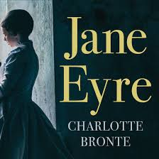
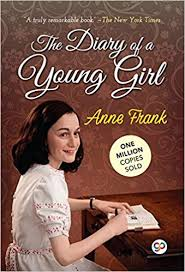

Book Reviews
Go Back
Popular Books
.jpeg)
- 'The Great Gatsby' by F. Scott Fitzgerald
- 'To Kill a Mockingbird' by Harper Lee
- 'Harry Potter and the Sorcerer's Stone' by J.K. Rowling
- 'The Catcher in the Rye' by J.D. Salinger
- '1984' by George Orwell
- 'The Catcher in the Rye' by J.D. Salinger
and many more...
Review of Mayor of Casterbridge
by Thomas Hardy
In a fit of drunken anger, Michael Henchard sells his wife and baby daughter for five guineas at a country fair. Over the course of the following years, he manages to establish himself as a respected and prosperous pillar of the community of Casterbridge, but behind his success there always lurk the shameful secret of his past and a personality prone to self-destructive pride and temper. Subtitled ‘A Story of a Man of Character’, Hardy’s powerful and sympathetic study of the heroic but deeply flawed Henchard is also an intensely dramatic work, tragically played out against the vivid backdrop of a close-knit Dorsetshire town. This edition includes an introduction, chronology of Hardy’s life and works, the illustrations for the original Serial Issue, place names, maps, glossary, full explanatory notes as well as Hardy’s prefaces to the 1895 and 1912 editions.

Jane Eyre
by Charlotte Brontë
Orphaned as a child, Jane has felt an outcast her whole young life. Her courage is tested once again when she arrives at Thornfield Hall, where she has been hired by the brooding, proud Edward Rochester to care for his ward Adèle. Jane finds herself drawn to his troubled yet kind spirit. She falls in love. Hard. But there is a terrifying secret inside the gloomy, forbidding Thornfield Hall. Is Rochester hiding from Jane? Will Jane be left heartbroken and exiled once again?
Fault in Our Stars
by John Green
Despite the tumor-shrinking medical miracle that has bought her a few years, Hazel has never been anything but terminal, her final chapter inscribed upon diagnosis. But when a gorgeous plot twist named Augustus Waters suddenly appears at Cancer Kid Support Group, Hazel's story is about to be completely rewritten. Insightful, bold, irreverent, and raw, The Fault in Our Stars is award-winning author John Green's most ambitious and heartbreaking work yet, brilliantly exploring the funny, thrilling, and tragic business of being alive and in love.

The Kite Runner
by Khaled Hosseini
The unforgettable, heartbreaking story of the unlikely friendship between a wealthy boy and the son of his father’s servant, The Kite Runner is a beautifully crafted novel set in a country that is in the process of being destroyed. It is about the power of reading, the price of betrayal, and the possibility of redemption; and an exploration of the power of fathers over sons—their love, their sacrifices, their lies. A sweeping story of family, love, and friendship told against the devastating backdrop of the history of Afghanistan over the last thirty years, The Kite Runner is an unusual and powerful novel that has become a beloved, one-of-a-kind classic.

The Diary of a Young Girl
by Anne Frank
The Diary Of A Young Girl is the real diary of a teenage girl that begins on Anne’s 13th birthday (12 June 1942) when she gets a diary. It tells the story of her family who live in Frankfurt, Germany and suddenly have to go into hiding as a result of Hitler and the Nazi Party’s treatment of Jews in Europe during the second world war. They escape to Amsterdam where they go into hiding with other Jews. The diary ends suddenly on 1 August 1944. There are many important messages in this book, but the most important message is that all people have the right to live in freedom. Anne’s story shows us that just because people may be a different religion or race, doesn’t mean that they should be treated differently. The terrible treatment of Jewish people during the war has shown this. Her diary shows us things that people don’t think about now, for example how every day the people in hiding worried about maybe being found and punished. Anne Frank I liked that Anne was a really happy and cheerful person even though she and her family were in an awful situation. Anne enjoyed writing and describing others. She was talkative and inquisitive and could be selfish. She was a typical teenage girl and she didn’t always understand how difficult life was for her mother and the other adults around her. She commented on the people who shared their hiding space. Sometimes this wasn’t very nice, but it shows how everybody’s life was challenging because they had to be quiet and not bring attention to themselves.